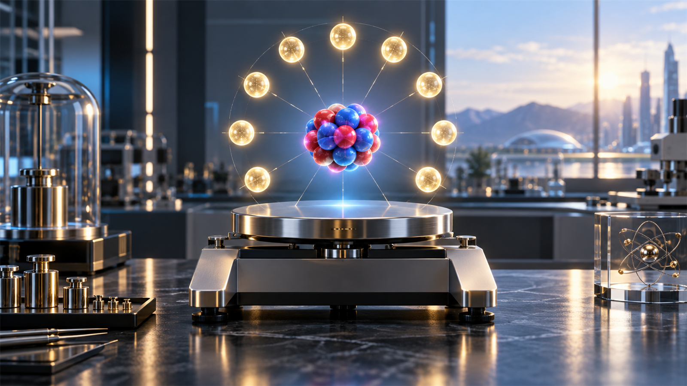
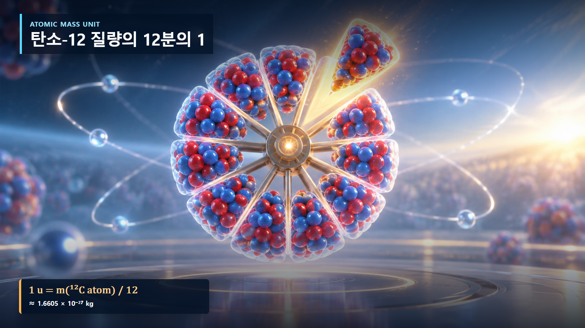
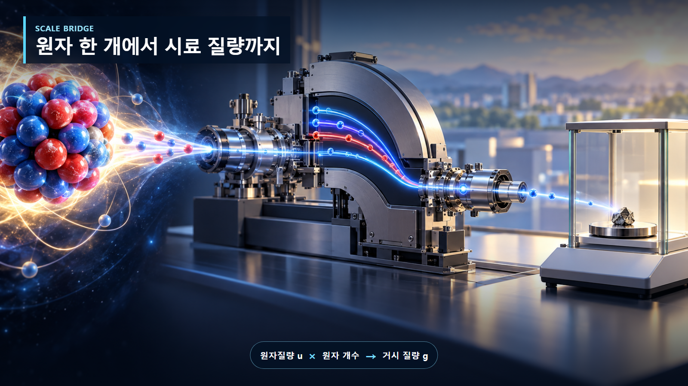

핵물리 기초 · 006
원자질량단위 u
원자 한 개의 질량을 다루는 공통 눈금

원자질량단위 u는 탄소-12 원자 질량의 12분의 1이다. 매우 작은 원자 질량을 kg보다 간단하게 비교하기 위한 단위다.
원자질량단위 u의 기본 원리
원자질량단위 u는 탄소-12 원자 질량의 12분의 1이다. 매우 작은 원자 질량을 kg보다 간단하게 비교하기 위한 단위다. 관련 값을 계산할 때에는 단위와 계의 경계를 먼저 정해야 하며, 평균적인 설명과 개별 핵종의 실제 자료를 구분해야 합니다.

관계식과 계산 예시
1 u = 1.660 539 066 60 × 10⁻²⁷ kg가 핵심 관계입니다. 우라늄-235 원자 하나의 질량은 약 235 u이므로 약 3.90×10⁻²⁵ kg이다. 계산에서는 입력값의 단위를 일관되게 맞추고, 근삿값이 적용되는 범위를 확인해야 합니다.

원자력공학에서의 활용
핵종 질량표, 반응 Q값, 질량결손과 연료 재고의 원자 수 계산에 쓰인다. 이 개념 하나만으로 실제 계통을 모두 설명할 수는 없으므로, 평가 목적에 맞는 핵자료와 재료조건, 에너지 범위 및 불확실성을 함께 적용해야 합니다.
해석에서 주의할 점
그림은 이해를 위한 개념 표현이며 입자 크기와 거리, 시간척도를 실제 비율로 그린 것이 아닙니다. 관계식은 대표적인 형태이므로 정밀 해석에서는 핵종별 평가핵자료와 보존법칙, 실험조건을 우선합니다.
탄소-12 기준의 단계별 정의
원자질량단위 u는 중성 탄소-12 원자의 질량을 정확히 12 u로 정한 눈금이다. 따라서 1 u=m(탄소-12 원자)/12≈1.66054×10⁻²⁷ kg이다. 양성자와 중성자는 약 1 u, 전자는 약 0.00055 u이므로 원자핵 계산에서는 u가 kg보다 편리하다.
| 대상 | 질량 규모 | 해석 |
|---|---|---|
| 전자 | 약 0.00055 u | 핵자보다 매우 가벼움 |
| 양성자 | 약 1.0073 u | 핵 질량의 주성분 |
| 중성자 | 약 1.0087 u | 양성자보다 조금 무거움 |
산소 원자의 두 번째 계산
산소-16 원자 한 개를 대략 16 u로 보면 16×1.66054×10⁻²⁷≈2.66×10⁻²⁶ kg이다. 입력 16 u에 변환계수를 곱해 kg 값을 얻는다. 실제 정밀질량은 결합에너지 때문에 정확히 16 u와 같지 않다.
핵반응 에너지의 적용
질량차에 E=mc²를 적용할 때 1 u·c²≈931.5 MeV를 사용하면 kg과 joule을 매번 거치지 않고 핵반응 에너지를 계산할 수 있다. 연료 핵종의 원자질량과 반응 전후 질량차가 같은 단위체계로 연결된다.
질량수와 u의 혼동
질량수 A는 핵자 개수인 정수지만 u로 표시한 실제 질량은 대개 정수가 아니다. 두 값을 같다고 놓으면 질량결손과 결합에너지를 잃어버린다. 원자질량에는 전자 질량도 포함되므로 핵질량과 구분해야 한다.
우라늄-235 원자의 변환 예시
우라늄-235 원자 한 개의 질량을 개략적으로 235 u로 두면 235×1.66054×10⁻²⁷ kg/u=3.90×10⁻²⁵ kg이다. 이 계산에서 u가 약분되어 kg만 남는지 확인하면 단위 오류를 줄일 수 있다. 반대로 kg 값을 u로 바꾸려면 1.66054×10⁻²⁷ kg/u로 나눈다. 정밀 핵자료에서는 235라는 질량수 대신 측정된 원자질량을 사용한다.
원자질량표의 값이 핵질량인지 중성 원자질량인지도 확인해야 한다. 전자 수가 반응 전후 같으면 전자질량이 상쇄되지만, 베타붕괴나 이온을 다루면 계산 경계를 명시해야 한다. 단위 선택보다 중요한 것은 같은 정의의 질량을 일관되게 비교하는 일이다.
정밀 계산의 자료 기준
u는 원자·핵 분야에서 널리 쓰이는 비SI 단위다. 원자질량과 핵질량이 섞이면 전자질량과 결합에너지 처리 방식이 달라지므로 자료의 기준 상태를 확인한다. 정밀 계산에서는 반올림하지 않은 상수와 평가된 핵종별 질량을 사용한다.
핵심 정리
u는 원자 규모 질량의 공통 단위이며 탄소-12를 기준으로 정의된다. kg 변환과 에너지 환산을 함께 익히면 미시적 질량표를 시료 질량과 핵반응 에너지 계산으로 연결할 수 있다.